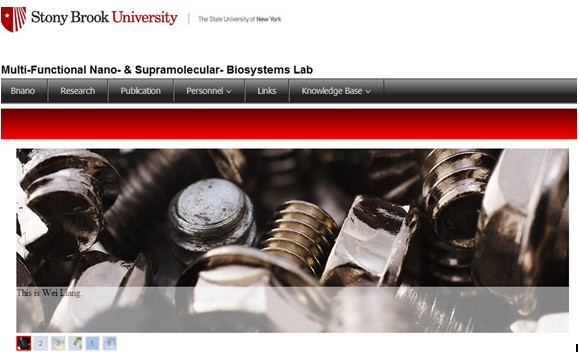

Statement
In the summer of 2012,I was also responsible for the construction of the Professor Balaji’s Lab network. The website was made mainly in HTML and Adobe Dreamweaver. In this work, the cooperators are Juan Wang who is my girlfriend and my good friend Kelechi. I wasalso the leader of this project. The website is still under building, but the majority have been finished. In the website, the details of the lab, the lab members, the professor and our current work& news could be updated and shown to others. So please have a visit on it and you will enjoy it!
The website is still under construction. The figure below is the screenshot of the website. Interesting it is, isn’t it?